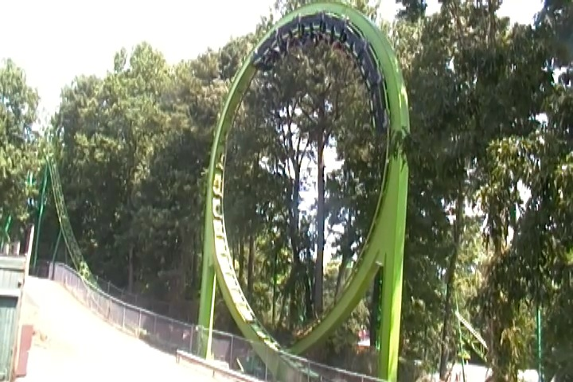
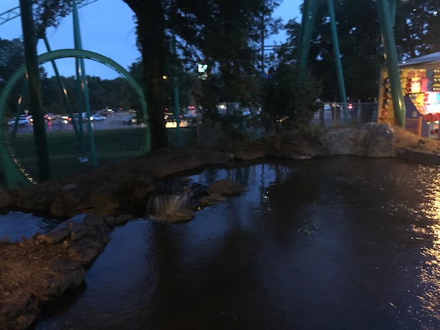
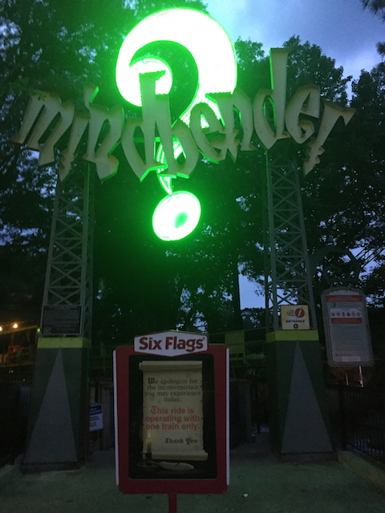
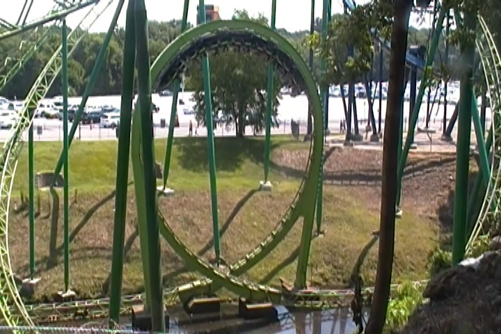
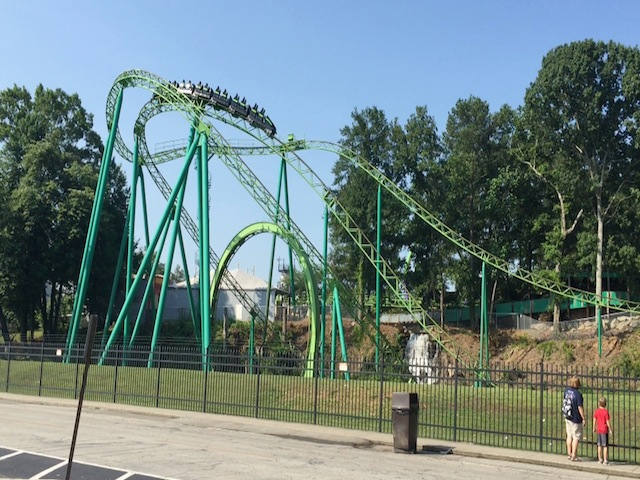
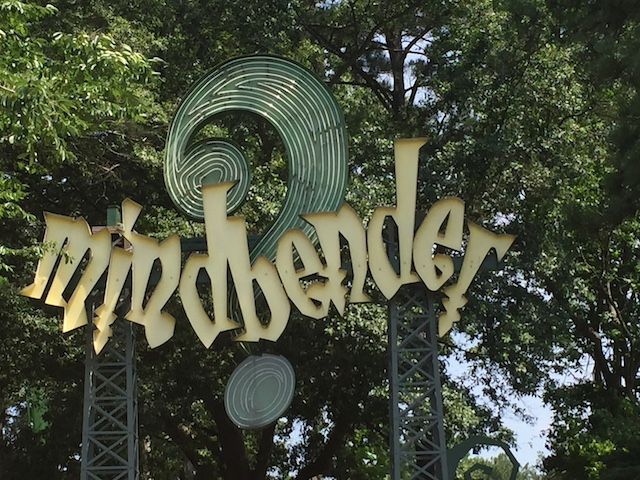

| |
Mindbender Review

We're here at Six Flags Over Georgia. Today's ride we'll be reviewing for you is Mindbender. This is one of those classic custom Schwarzkoph loopers. I know these rides don't look like too much. Yeah, it looks fun. But most people would be surprised to hear that this is one of the best rides at Six Flags Over Georgia. Cause yeah. This ride is good. It's really freaking good. Get in the cars, pull down the lap bars, and away we go! We roll through some straight track before we start climbing up the lifthill. Climbing up, there's not much of a view. All we see are trees, and a little bit of Goliath sticking out. We reach the top, and go around a turn, gain a little bit of speed, and then head down the first drop. Nothing really special with this first drop, but it's fun, and it does give us some good speed going foreward. We then head into the first vertical loop. It's pretty strong and really pins us to our seats. But don't worry. It's only going to get better from here. We then rise up a big hill, and head around a turn. Wave hello to Batman for us. We go around another little dip before we get into one of the craziest parts of the ride. The spiral drop. So yeah. We then head into a spiral drop to the ground, which not only lays on speed, but also a lot of laterals. I mean, these really knock you down. Even the entire time you're heading back up the spiral hill, it's still keeping you on your side. It's great and all. However, let me just make this perfectly clear. It is NOT an inversion. Not an inversion AT ALL!!! Seriously, how the hell do people count that as an inversion!? Yes, it's a ton of fun. One of my favorite parts of the ride. But at no point do you feel like you're going upsidedown. Seriously, I don't get that at all. But hey. We then head down an even bigger drop and really get some speed going. Now I'm really enjoying this. We then head up a big hill, and BAM!!! Nice little pop of ejector air. I really like that. We go around a turn, and sadly, go through a trim. LAME!!!! >=( Oh well. It doesn't really affect us much. We then head down an even bigger drop, and gaining a lot of speed. And then we head into the other vertical loop. BAM!!! Our asses are glued to the seat right here. As yeah. This is a powerful f*cking inversion. One of the strongest loops I've dealt with. We blast through a tiny little concrete tunnel. Seriously, you scream "TAKE THE--" we're already out of the tunnel. We head up a small little hill, and get another pop of airtime. We head through a banked turn, giving us some decent laterals. I really like this. And now we glide into the brake run. So yeah. That was Mindbender. And...yeah. This thing is great. I know its thought of as one of the older rides in the park, but do not understimate these classic Schwarzkophs. They really are intense rides. I mean, this thing has some crazy positive Gs, and some good laterals as well. Seriously, you gotta check out Mindbender when at Six Flags Over Georgia. It really is one of the best Schwarzkophs out there.
8/10
Location: Six Flags Over Georgia
Opened: 1978
Built by: Schwarzkopf
Last Ridden: June 27, 2016
Mindbender Photos





Home
|